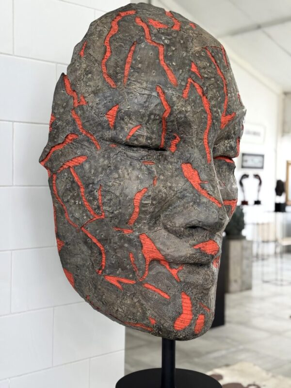
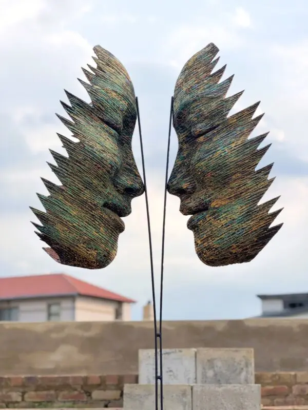
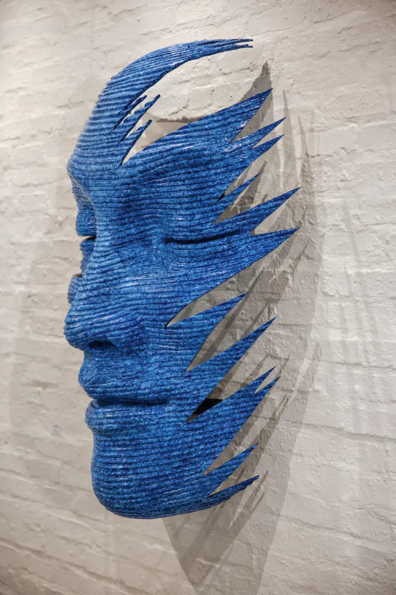
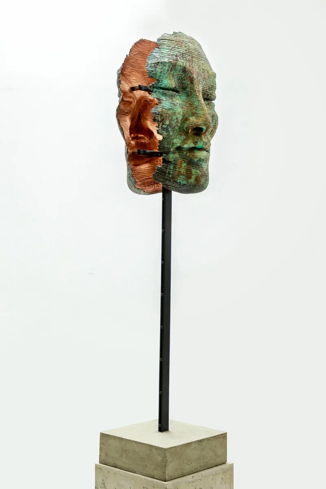

Outdoor & Indoor Works
Anton Smit's sculptures vary in size and finish — from weathered corten steel to mirror-polished finishes. Each piece is documented below with title, year, materials and approximate dimensions.
Sculpture Catalogue
Mask Sculptures
 FAITH MASK-FREE-STANDING |
 SHATTERED-REMAINS-SERIES |
 SUBLIME-FREE-STANDING |
|
 QUES MASK |
 FACES-SERIES 11-WALL MOUNTED |
 FAITH MASK-DOUBLE-FREE STANDING-LONG BASE |